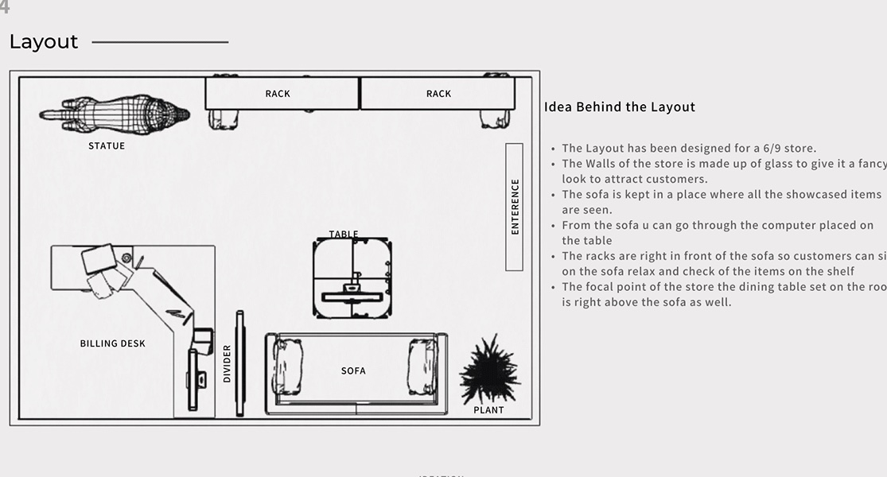
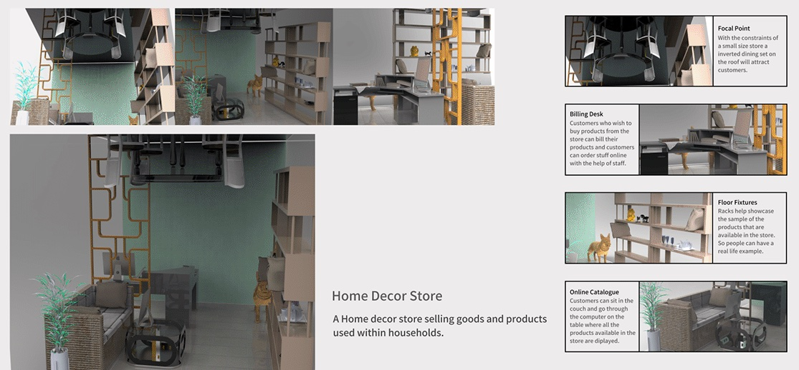

Brief and boards
The brief: a home decor store of minimal elegance that feels safe and cosy and has a home-like environment, for people aged 18 to 65, in a 6 by 9 metre store. The mood board was built so a customer walking in feels comfortable, happy, safe and at home. The material board was built so the store feels welcoming and elegant, modern, constructive and fancy.
Understanding current stores
Home decor stores like Domain, Home Centre and Address Home are large and carry a lot: full sofa sets, dining sets, kitchens. They take time to see, and it is easy to get lost and leave without finding what you wanted. Fixtures, anything from a pegboard to a life-size display, are what compel customers to buy; visual merchandising is a crucial term for retailers. The question was how to fit all of that into 6 by 9 metres.
Layout
- The walls are glass, to give the store a fancy look and attract customers.
- The sofa sits where every showcased item can be seen.
- From the sofa, customers browse the online catalogue on the computer on the table.
- The racks are right in front of the sofa, so customers can sit, relax and check the items on the shelf.
- The focal point is a dining table set on the roof, right above the sofa.

Final concept
With the constraints of a small store, an inverted dining set on the roof draws people in. Customers who want to buy can bill at the desk or order online with the help of staff. The racks showcase samples of what the store carries, so people have a real-life example, and the couch and the computer on the table are the online catalogue.
